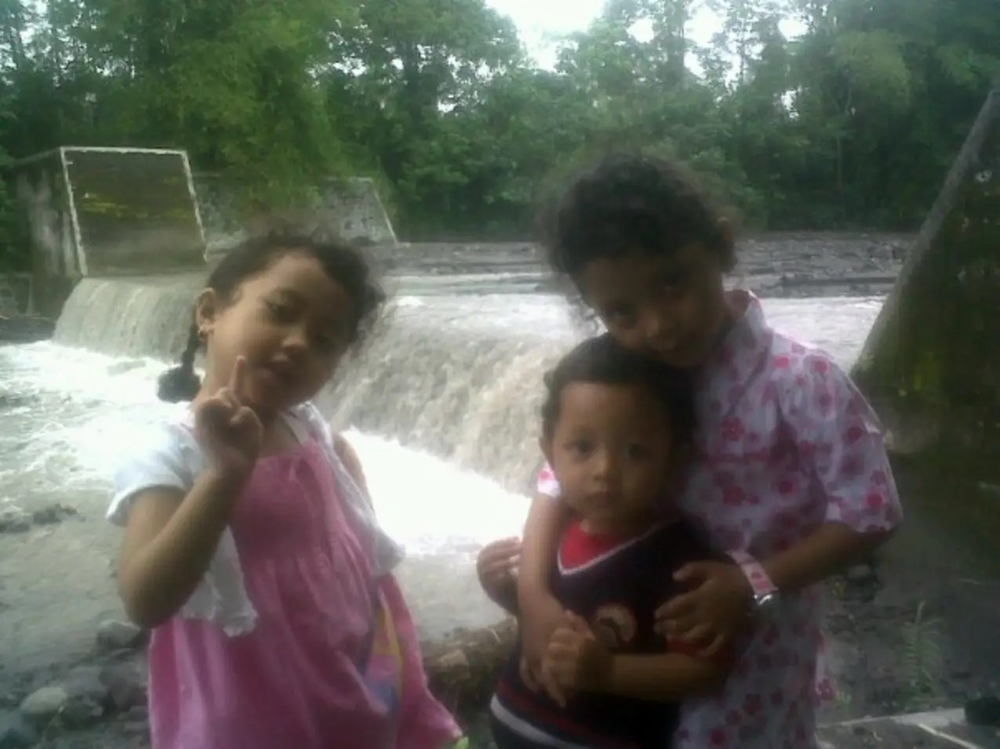

“Ibu kalau pergi kepikiran, nanti siapa yang akan jaga Fira, Bita, Lala, dan Reza? Ibu masih mau berjuang karena Ibu kepikiran anak-anak kalau Ibu pergi. Ibu khawatir Fira dan adik-adik kalau Ibu nggak ada.”
Dulu, dunia hanyalah aku, Ayah, dan adik-adikku: Bita, Lala, dan Reza.
Kita tumbuh dengan hanya memiliki satu sama lain. Dulu, kita hanya empat anak kecil yang kebingungan mencari arah jalan pulang. Aku berusia sekitar 13 tahun ketika Ibu pergi. Bita waktu itu 10 tahun, Lala 8 tahun, dan Reza baru 6 tahun. Usia yang sebenarnya masih terlalu kecil untuk memahami kehilangan, apalagi harus belajar menjalani kehidupan setelahnya. Rasanya seperti aku berjalan menuju kegelapan dengan memegang lentera yang cahayanya samar, sementara adik-adikku menggenggam tangan dan bajuku, mengikuti ke mana pun arah yang aku tuju.
Sejak saat itu, keadaan keluarga kita tidak selalu mudah. Kita tumbuh dengan Ayah dan satu sama lain. Ada banyak hal yang mungkin tidak bisa kita dapatkan seperti anak-anak lain seusia kita. Ada bagian dari masa kecil yang harus kita lewati dengan keadaan berbeda, banyak hal yang harus dipahami lebih cepat, dan mungkin ada pertanyaan-pertanyaan yang sampai hari ini masih kita simpan sendiri.
Aku membantu Bita dan Lala menyuapi Reza sebelum berangkat sekolah. Bita dan Lala menjemur pakaian, aku menyetrika baju, sementara Reza menyiapkan buku-bukunya sendiri. Aku dan Bita menentukan siapa yang menyapu dan mengepel rumah, Lala membersihkan dan merapikan barang-barang, sementara Reza menyiram tanaman.
Aku sering berpikir bahwa keadaan seperti itu bisa saja membawa seseorang ke arah yang berbeda. Adik-adikku tidak tumbuh dengan mudah. Kalian melewati masa kecil dan beranjak dewasa tanpa merasakan kasih sayang seorang ibu. Kalian punya seribu satu alasan untuk marah kepada dunia, untuk memberontak, untuk kehilangan arah, atau bahkan untuk tidak terlalu peduli dengan masa depan. Dan aku rasa tidak ada yang bisa sepenuhnya menyalahkan kalian jika suatu hari memilih jalan yang salah. Tumbuh dengan keadaan seperti itu memang bukan perkara sederhana, terlebih ketika kita masih terlalu muda untuk memahami apa yang sebenarnya sedang terjadi.
Tapi hari ini, sepuluh tahun setelah semua itu terjadi, ketika melihat kalian satu per satu tumbuh, ada sesuatu yang membuatku sangat bersyukur.
Bita dan Lala diterima di UGM, masing-masing di Fakultas Geografi dan Biologi. Reza juga semakin rajin belajar. “Kak Fira, aku butuh laptop untuk coding! Reza pengen banget masuk Teknik Komputer habis lulus SMA!”
Kalian mungkin tidak menyadari betapa bahagianya aku melihat kalian tetap menjaga salat, belajar dengan baik, dan tidak mudah terbawa oleh hal-hal yang bisa menjauhkan kalian dari masa depan yang sedang kalian bangun.
Terima kasih karena masih membawa nilai-nilai yang dulu diajarkan Ibu dan Ayah, bahkan ketika Ibu sudah tidak lagi berada di tengah-tengah kita. Mungkin ada banyak hal yang tidak sempat Ibu lihat secara langsung. Aku berharap Ibu tahu bahwa anak-anaknya sedang berusaha tumbuh dengan baik. Bahwa kekhawatiran yang selalu Ibu bawa sebelum pergi, tentang siapa yang akan menjaga Fira dan adik-adiknya, perlahan terjawab melalui Bita, Lala, dan Reza yang kini mulai menentukan langkah mereka sendiri dan bertanggung jawab atas kehidupan masing-masing.
Kalian bahkan sudah hidup lebih lama tanpa Ibu daripada bersama Ibu. Ada begitu banyak tahun yang harus kalian lewati tanpa kehadirannya, tetapi aku bersyukur nilai-nilai yang pernah beliau ajarkan tetap tumbuh dalam diri kalian. Dan setiap rasa syukur yang kupanjatkan kepada Allah setiap hari, salah satunya adalah karena penjagaan-Nya terhadap kalian, bahkan ketika aku sedang berada jauh dari rumah.
Aku tidak tahu apakah selama ini aku cukup sering mengatakan bahwa aku bangga kepada kalian. Mungkin kita tidak selalu punya kesempatan untuk membicarakan hal-hal seperti ini. Kita punya kesibukan masing-masing, tinggal di tempat yang berbeda, dan menjalani kehidupan yang semakin hari semakin jauh dari masa kecil kita. Tetapi sungguh, melihat kalian tetap berusaha menjadi anak-anak yang baik adalah salah satu hal yang paling aku syukuri.
Seiring bertambahnya usia, aku mulai memahami bahwa menjadi kakak, terutama ketika kita adalah anak perempuan pertama dalam keluarga, kadang membuat kita melihat masa depan dengan cara yang sedikit berbeda. Kita tidak hanya memikirkan apa yang ingin kita capai untuk diri sendiri. Ada tiga orang lain yang tanpa sadar selalu ikut masuk dalam pertimbangan kita.
Ketika aku belajar, mengambil kesempatan, atau mencoba membangun sesuatu, tentu ada banyak hal yang ingin aku capai untuk kehidupanku sendiri. Aku juga punya mimpi, punya kebutuhan, dan punya banyak hal yang ingin aku usahakan. Tetapi di antara semua itu, sering kali ada satu harapan yang selalu muncul: aku ingin kalian tumbuh lebih baik dariku.
Mungkin orang lain melihat uang yang kita hasilkan sebagai sesuatu yang bisa ditabung, digunakan untuk membeli sesuatu, atau dipakai untuk menikmati hasil kerja keras sendiri. Aku juga ingin melakukan itu. Tetapi ada saat-saat ketika sebagian dari hasil kerja kerasku terasa jauh lebih berarti jika bisa digunakan untuk sesuatu yang berkaitan dengan masa depan kalian.
Aku tidak pernah berpikir terlalu lama ketika menyangkut pendidikan kalian. Kalau ada biaya sekolah, kebutuhan belajar, kesempatan, atau sesuatu yang memang bisa membantu kalian berkembang, aku ingin sebisa mungkin ikut mengusahakannya. Aku tahu betapa berharganya kesempatan pendidikan. Aku tahu bagaimana rasanya ingin mengejar sesuatu, tetapi harus memikirkan banyak hal sebelum bisa benar-benar melangkah.
Dan mungkin karena aku pernah merasakan itu, aku ingin kalian punya ruang yang lebih luas untuk menentukan pilihan.
Bita, Lala, dan Reza, Kak Fira akan selalu berusaha melindungi kalian, sebisa yang Kakak mampu. Aku tahu betapa kerasnya kehidupan di luar sana. Aku tahu ada banyak hal yang harus dihadapi ketika kita mulai dewasa, ada kenyataan yang tidak selalu berjalan sesuai harapan, dan ada masa-masa ketika dunia terasa begitu jahat kepada kita. Aku sudah merasakan sendiri bagaimana rasanya harus menghadapi semua itu. Kalau boleh berharap, aku ingin kalian tidak perlu melewati kesulitan yang sama seperti yang pernah Kakak lalui. Aku ingin kalian punya kehidupan yang lebih baik, jalan yang lebih lapang, dan seseorang yang bisa kalian andalkan ketika dunia sedang tidak berpihak kepada kalian. Selama aku masih mampu, aku akan selalu mengusahakan itu untuk kalian.
Aku tidak ingin kalian merasa harus membatalkan mimpi hanya karena biayanya terlalu besar. Aku tidak ingin kalian buru-buru menganggap sesuatu mustahil hanya karena belum tahu bagaimana cara mencapainya. Kalau ada kesempatan yang bisa membuat kalian belajar lebih jauh, pergi ke tempat yang lebih baik, atau mengenal dunia yang lebih luas, aku ingin kalian punya kesempatan untuk mengambilnya.
Aku berharap kalian tumbuh jauh lebih baik dariku. Aku juga tahu bahwa Ibu, di mana pun beliau berada sekarang, pasti menginginkan hal yang sama. Aku ingin kalian memiliki kehidupan yang jauh lebih baik daripada kehidupan yang dulu Ibu jalani.
Sebagian dari tabunganku mungkin akan berubah menjadi biaya pendidikan kalian. Sebagian dari waktu dan tenaga yang aku punya mungkin akan digunakan untuk membantu kalian mempersiapkan sesuatu. Ada hal-hal yang mungkin harus kutunda untuk diriku sendiri. Tetapi aku tidak merasa sedang kehilangan sesuatu ketika melakukannya. Justru ada kebahagiaan tersendiri ketika mengetahui bahwa hasil dari sesuatu yang aku usahakan bisa menjadi jalan bagi kalian untuk mendapatkan kehidupan yang lebih baik.
Aku sangat berharap kalian tumbuh jauh lebih baik dariku.
Aku juga tidak berharap kalian akan mengembalikan semua itu suatu hari nanti. Aku tidak pernah menghitung berapa banyak yang sudah kuberikan atau berapa banyak yang harus kalian kembalikan. Aku hanya ingin kalian bisa menerima setiap kesempatan yang datang dan menggunakannya sebaik mungkin.
Aku hanya ingin kalian tahu bahwa kalian pantas mendapatkan kesempatan itu. Aku juga ingin Ibu tahu bahwa beliau meninggalkan sesuatu yang jauh lebih besar daripada yang mungkin pernah beliau bayangkan. Ibu dan Ayah mewariskan ilmu, kemampuan untuk bekerja keras, dan keberanian untuk memperjuangkan mimpi kami. Hal-hal yang sampai hari ini masih kami bawa dalam menjalani kehidupan.
Mungkin bagi sebagian orang, itu hanya uang. Tetapi bagi seorang kakak, ada begitu banyak harapan yang ikut dititipkan di dalamnya.
Ketika aku menginjakkan kaki di Oxford, waktu itu aku menulis bahwa suatu hari Bita, Lala, dan Reza akan menyusul Kak Fira ke Oxford. Aku benar-benar berharap suatu hari nanti kalian punya kesempatan untuk datang ke tempat-tempat seperti itu.
Aku tidak meminta kalian harus masuk Oxford. Aku juga tidak berharap kalian mengikuti perjalanan yang sama denganku. Aku hanya ingin kalian tahu bahwa dunia ini jauh lebih luas daripada tempat kita memulai kehidupan. Ada banyak universitas yang bisa kalian datangi, banyak negara yang bisa kalian kunjungi, banyak orang yang bisa kalian temui, dan banyak hal yang mungkin belum pernah terlintas dalam pikiran kita ketika masih kecil dulu.
Kalau suatu hari kalian bisa pergi lebih jauh daripada yang pernah aku capai, aku harap kalian tumbuh jauh lebih baik dariku. Kalau kalian mendapatkan kesempatan yang bahkan tidak pernah aku dapatkan, ambillah. Kalau kalian bisa membangun kehidupan yang jauh lebih baik daripada kehidupan yang sekarang sedang aku usahakan, aku akan menjadi salah satu orang yang paling bahagia melihatnya.
Aku tidak ingin kalian hanya menyusul perjalananku. Aku ingin kalian punya perjalanan sendiri, dengan kemungkinan-kemungkinan yang jauh lebih besar.
Dan mungkin ini juga yang dirasakan oleh banyak kakak di luar sana. Ada begitu banyak kakak yang tidak selalu bisa mengatakan kepada adik-adiknya bahwa mereka rela bekerja lebih keras agar adik-adiknya bisa belajar lebih tinggi. Ada yang diam-diam menyisihkan uang untuk biaya sekolah, membelikan sesuatu yang dibutuhkan, membantu membayar pendidikan, atau mengambil kesempatan bekerja lebih jauh dari rumah. Ada yang mungkin tidak pernah menjelaskan alasan di balik semua keputusan itu.
Aku rasa, banyak kakak melakukan hal-hal tersebut karena mereka pernah tahu bagaimana rasanya hidup dengan pilihan yang terbatas. Mereka ingin adik-adiknya punya lebih banyak kesempatan dan bisa menjalani kehidupan yang lebih baik.
Aku rasa, salah satu bentuk cinta seorang kakak adalah ketika kita mulai menginginkan sesuatu bukan hanya untuk diri sendiri. Kita mulai memikirkan bagaimana caranya agar orang-orang yang kita sayangi juga bisa mendapatkan kesempatan untuk merasakan hal-hal baik dalam hidup. Bahkan terkadang, kita lebih mudah mengeluarkan uang untuk pendidikan adik sendiri daripada membeli sesuatu untuk diri sendiri. Melihat kalian berkembang dan mendapatkan kesempatan yang lebih baik memberikan kebahagiaan yang sulit dijelaskan.
Aku sangat berharap kalian tumbuh jauh lebih baik dariku.
Untuk Bita, Lala, dan Reza, aku tidak tahu kehidupan seperti apa yang menunggu kalian nanti. Aku juga tidak tahu apakah semua hal yang sedang aku usahakan hari ini akan membawa kalian ke tempat-tempat yang kita impikan. Tetapi aku berharap kalian tidak pernah berhenti berusaha untuk masa depan kalian sendiri.
Terkadang aku membayangkan, bagaimana kalau Ibu bisa melihat kalian sekarang? Anak-anak yang dulu begitu Ibu khawatirkan sebelum pergi, yang masih sangat kecil ketika Ibu tinggalkan, kini sudah mulai menginjakkan kaki di perguruan tinggi. Fira menginjakkan kaki di Inggris, di kampus, yang dulu Ibu sebut sebagai salah satu universitas terbaik di dunia, Bita dan Lala diterima di kampus tempat Ibu pernah menuntut ilmu. Reza, anak bungsu yang mungkin paling Ibu khawatirkan, sekarang sedang punya mimpi untuk menjadi seorang engineer.
Aku ingin sekali Ibu tahu bahwa anak-anak yang dulu begitu beliau khawatirkan kini sedang tumbuh dan menentukan masa depan mereka sendiri. Aku harap beliau bisa melihat bahwa kami masih saling menjaga.

Teruslah belajar. Jaga diri kalian. Jangan tinggalkan hal-hal baik yang sudah diajarkan Ayah dan Ibu. Jangan takut punya mimpi yang besar, dan jangan merasa bahwa kalian harus membatasi diri hanya karena kita pernah memulai dari keadaan yang tidak mudah.
Aku juga masih punya banyak hal yang ingin dicapai. Masih ada banyak tempat yang ingin didatangi, banyak mimpi yang ingin diwujudkan, dan banyak hal yang masih harus diperjuangkan. Kita sama-sama masih berjuang dan masih dalam perjalanan. Sama seperti dulu ketika kita masih sekolah, aku menyiapkan sarapan, Bita dan Lala menyapu, sementara Reza menyiapkan bukunya. Aku berharap kita terus diberi kekuatan untuk melewati kehidupan dan segala tantangan yang masih menunggu di depan.
Aku tidak sedang berdiri di garis akhir dan meminta kalian menyusul. Aku hanya ingin kita semua punya kesempatan untuk pergi lebih jauh daripada yang pernah kita bayangkan.
Mungkin ketika dulu kita masih kecil, kita tidak pernah benar-benar membayangkan akan sampai sejauh ini. Dan kalau suatu hari nanti kalian melihat kembali foto-foto lama kita, aku berharap kalian bisa melihat betapa banyak hal yang sudah berhasil kita lewati.
Kalau dunia pernah terasa terlalu sempit untuk kita ketika kecil, semoga suatu hari nanti kalian bisa hidup dengan dunia yang begitu luas, sampai kalian tidak lagi harus bertanya apakah mimpi-mimpi kalian mungkin untuk diwujudkan.
Untuk kalian, aku akan selalu mengusahakan apa yang aku bisa. Aku tidak berharap kalian akan membalasnya. Aku hanya berharap kalian punya kesempatan untuk hidup lebih jauh, lebih baik, dan lebih bahagia daripada yang pernah kita bayangkan.
Suatu hari nanti, mungkin kita akan menua. Kita akan memiliki keluarga dan kehidupan masing-masing. Kita mungkin akan semakin jarang bertemu, semakin sibuk dengan urusan kita sendiri, sampai suatu hari kita hampir lupa bahwa dulu kita pernah bermain di ruang yang sama, tidur berdekatan di samping Ayah dan Ibu, berbagi makanan, berebut sesuatu yang sederhana, dan tumbuh di rumah yang sama.
Mungkin nanti akan ada banyak hal yang berubah. Rumah yang dulu selalu ramai bisa jadi tidak lagi dipenuhi suara kita. Tidak ada lagi yang harus membagi tugas menyapu, mengepel, atau menyiapkan sarapan sebelum sekolah. Kita tidak lagi harus saling menunggu untuk berangkat, atau memastikan satu sama lain sudah makan. Kita akan punya cerita, tanggung jawab, dan orang-orang baru dalam kehidupan masing-masing.
Tapi, sejauh apa pun nanti kita pergi, aku harap kita tidak pernah benar-benar merasa asing satu sama lain. Aku harap kita selalu punya alasan untuk pulang, untuk berkumpul, untuk kembali menjadi empat anak kecil yang dulu berusaha menjalani hari-hari bersama. Sebab sebelum kita memiliki dunia masing-masing, kita pernah menjadi dunia bagi satu sama lain.
Dan kalau suatu hari nanti kita sudah terlalu sibuk dengan kehidupan masing-masing, aku harap kalian ingat bahwa Kak Fira akan selalu menjadi kakak kalian. Bahwa di antara semua hal yang mungkin berubah seiring waktu, ada satu hal yang ingin tetap sama: aku akan selalu mengusahakan yang terbaik untuk kalian.
Untukmu, kujual dunia.
Pesan dari pembaca
0 pesan